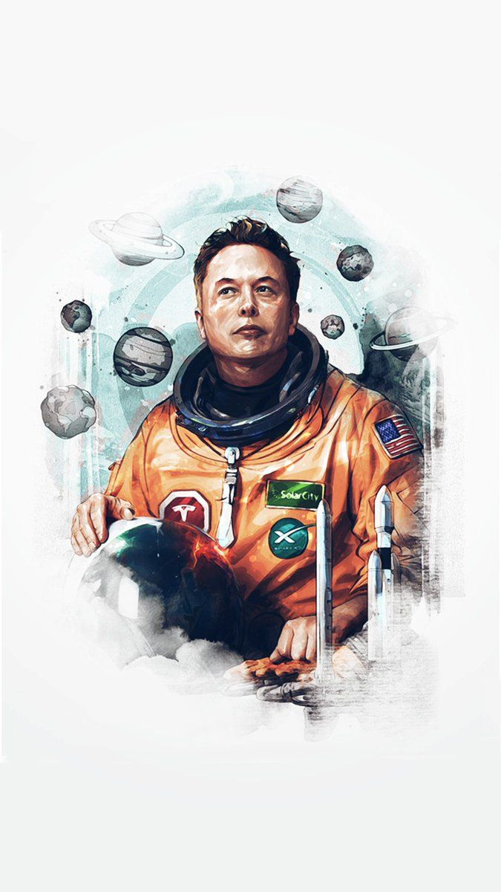

Elon Musk
Tesla, SpaceX e a Busca por um Futuro Fantástico.

Elon Reeve Musk FRS (Pretória, 28 de junho de 1971) é um empreendedor e filantropo sul-africano-canadense, naturalizado norte-americano. Ele é o fundador, diretor executivo e diretor técnico da SpaceX; CEO da Tesla, Inc.; vice-presidente da OpenAI, fundador e CEO da Neuralink; co-fundador e presidente da SolarCity. Em 7 de janeiro de 2021, com um patrimônio pessoal estimado em cerca de 188,5 bilhões de dólares, tornou-se a pessoa mais rica do mundo, de acordo com a Bloomberg, ultrapassando o empresário Jeff Bezos. No ranking da Forbes, Musk ocupa em 2022 no primeiro lugar.
- 1971 Nascimento de Elon Musk
- 1992 Mudou-se para o Canadá
- 1993 Início ao seu Ph.D. em física - Stanford.
- 1999 Venda da Zip2
- 2002 Venda do PayPal
- 2008 Quase falência da Tesla
- ...
- 2022 O homem mais rico do mundo